Paisajes De La Semana


La playa de Cofete se encuentra en el Parque Natural de Jandía y pertenece al municipio de Pájara, al sur de la isla de Fuerteventura.
La playa de Las Teresitas es una playa situada en el pueblo de San Andrés del municipio de Santa Cruz de Tenerife, en la isla de Tenerife. Es la playa más conocida y turística de la ciudad de Santa Cruz.
Votar
Votar
Fotos de otros meses
 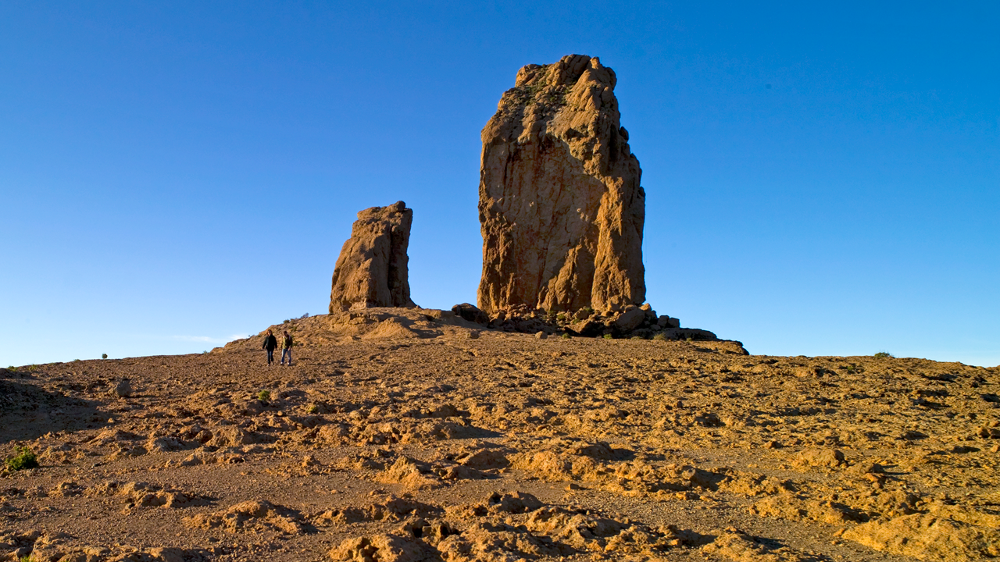
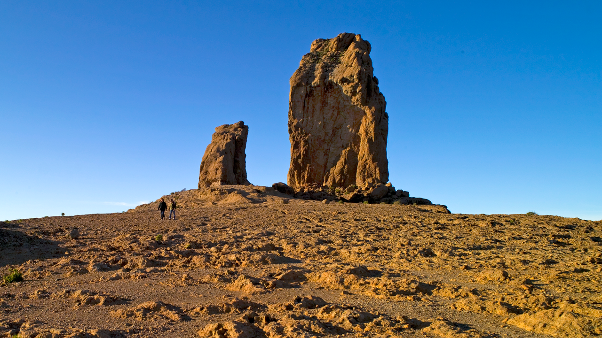
 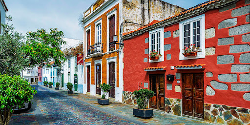
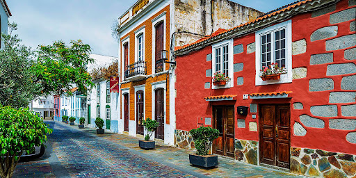


 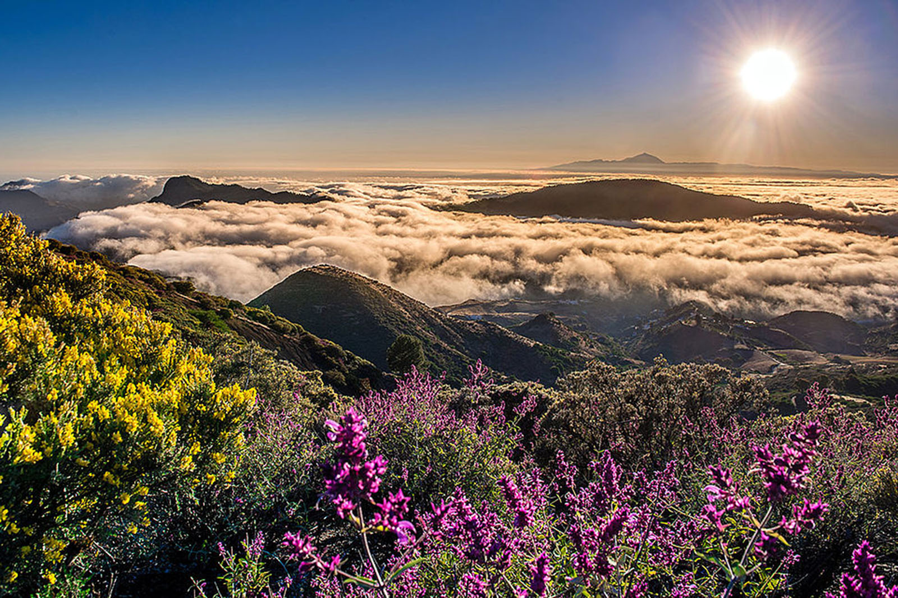
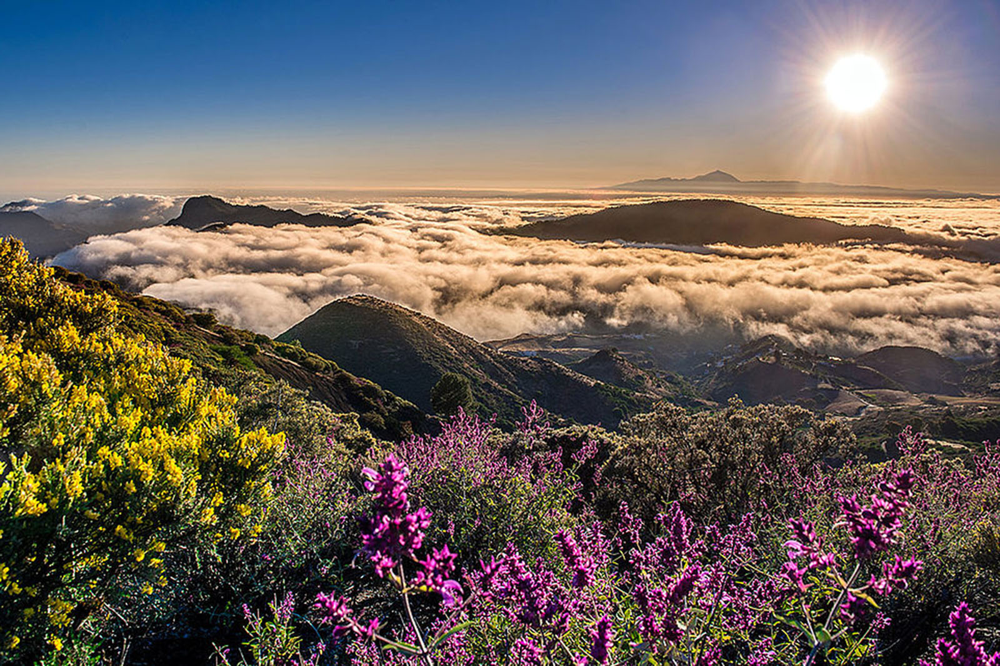

Presa de Chira
Roque Nublo
Poseidón en Melenara
Calles de San Mateo
Llanura Tropical
Pueblo de Tejeda
Anochecer en Tejeda
Tamadaba
Dunas de Maspalomas
Fotos de Nuestros Seguidores
 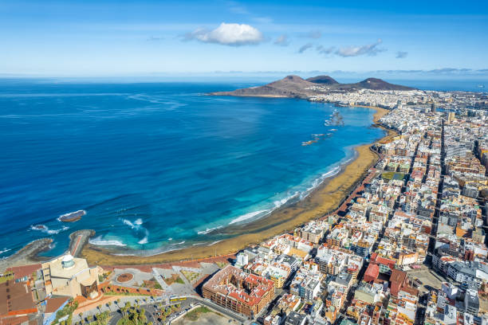
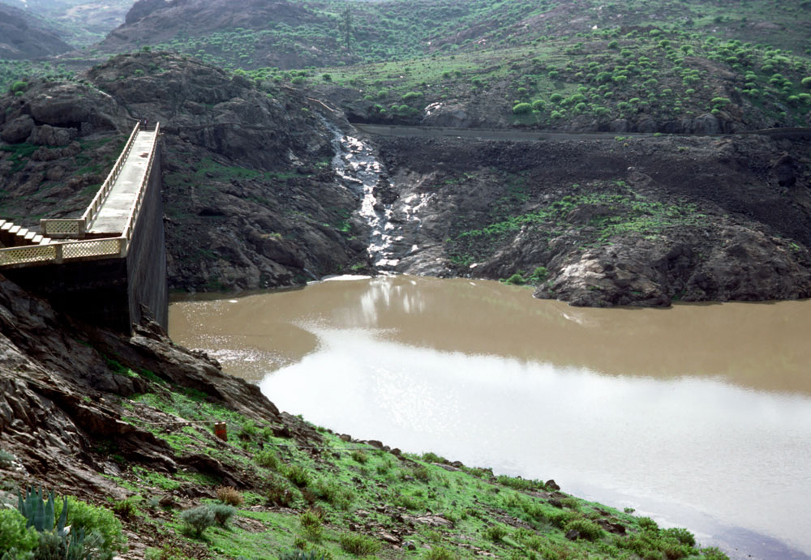
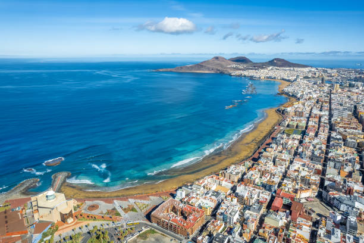
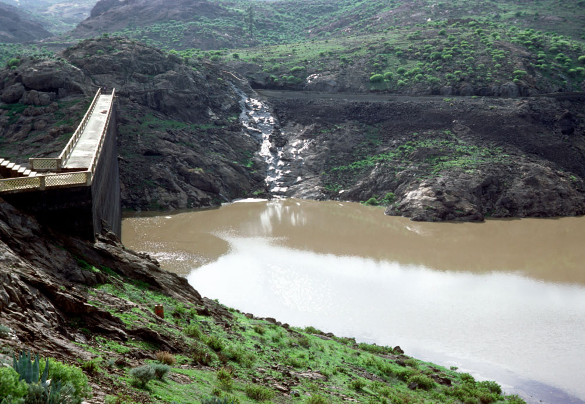
 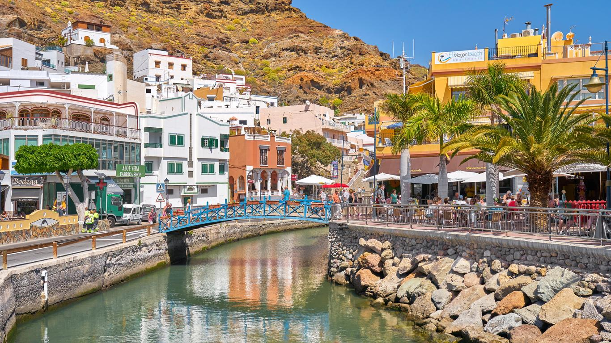
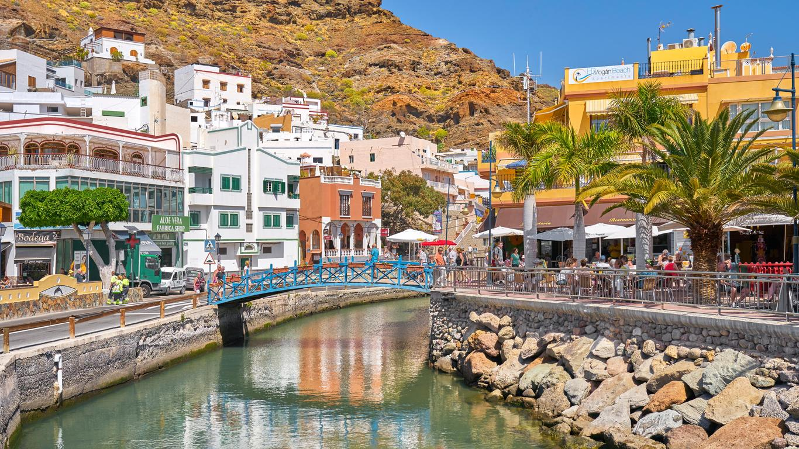


Calle Principal de San Mateo
Playa de Las Canteras
Presa de las niñas
Barrio en Santa Brigida
Puerto de Mogan
Puerto de Agaete
Iglesia de Arucas
Pueblo de Tacoronte
Calle Principal de San Mateo
Playa de Las Canteras
Presa de las niñas
Barrio en Santa Brigida
Puerto de Mogan
Puerto de Agaete
Iglesia de Arucas
Pueblo de Tacoronte
 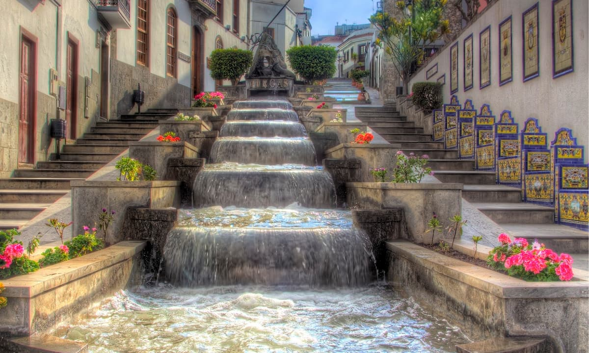
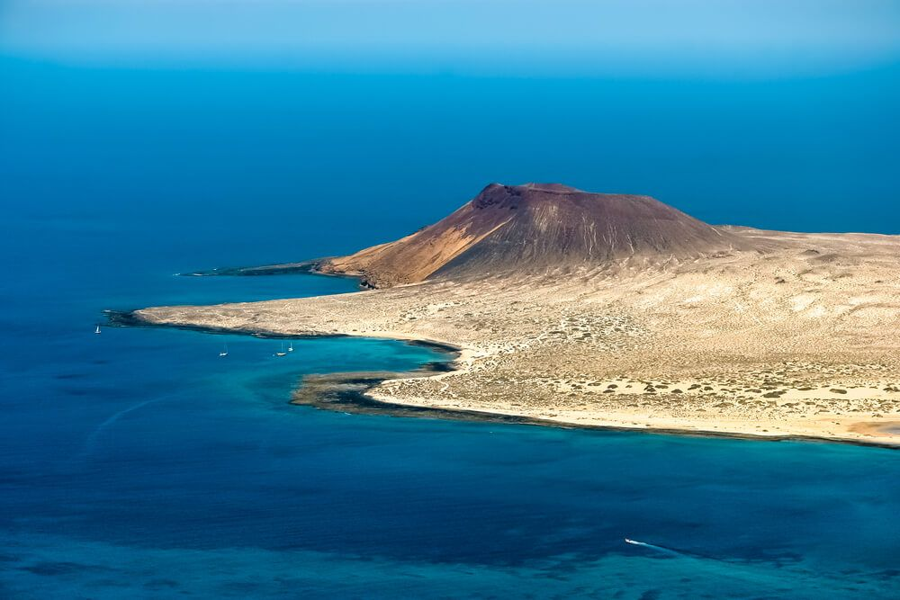
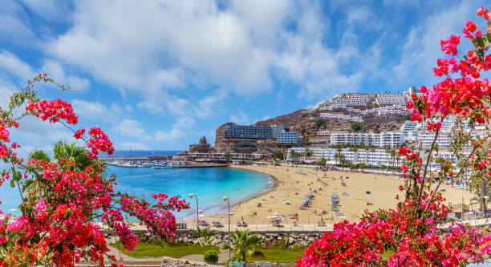
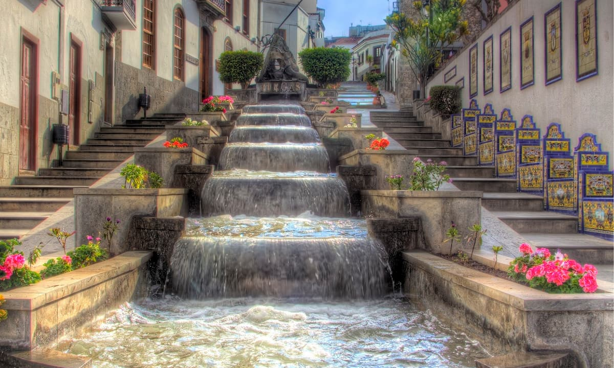
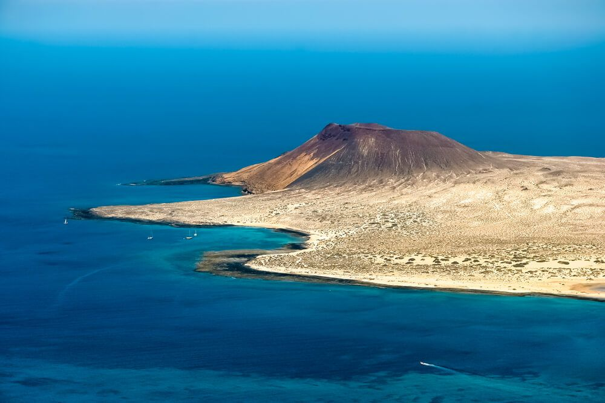
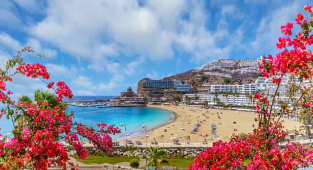
 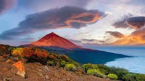
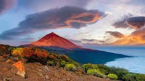
Trabajo en Equipo
Ganas de Mejorar
Constancia